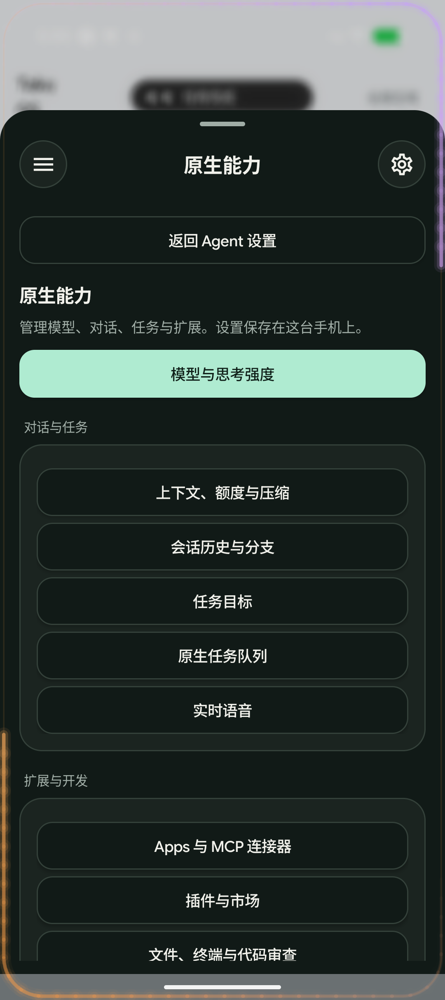
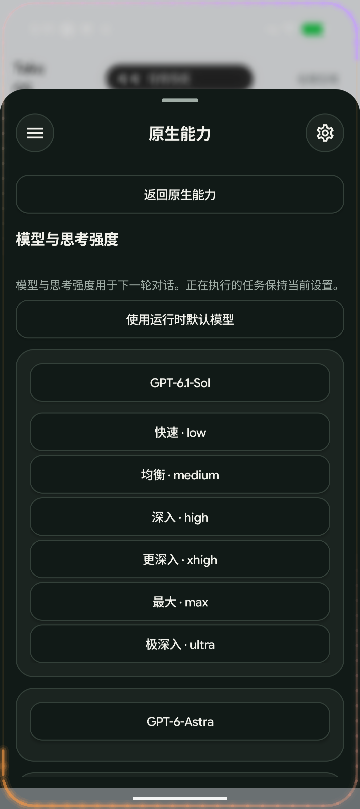
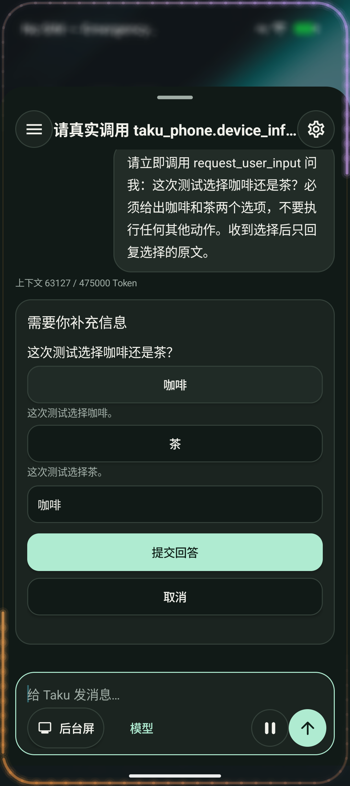
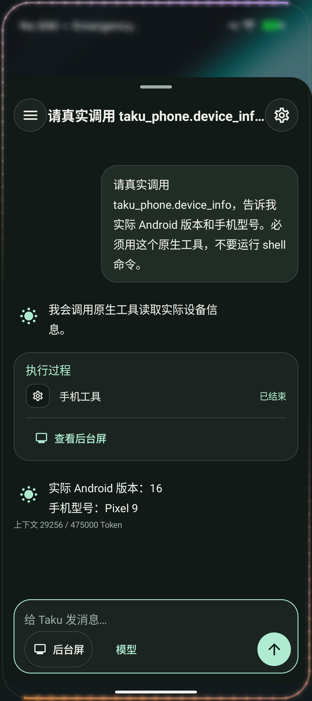
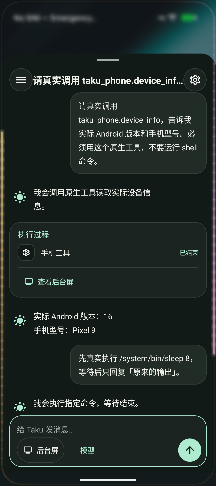
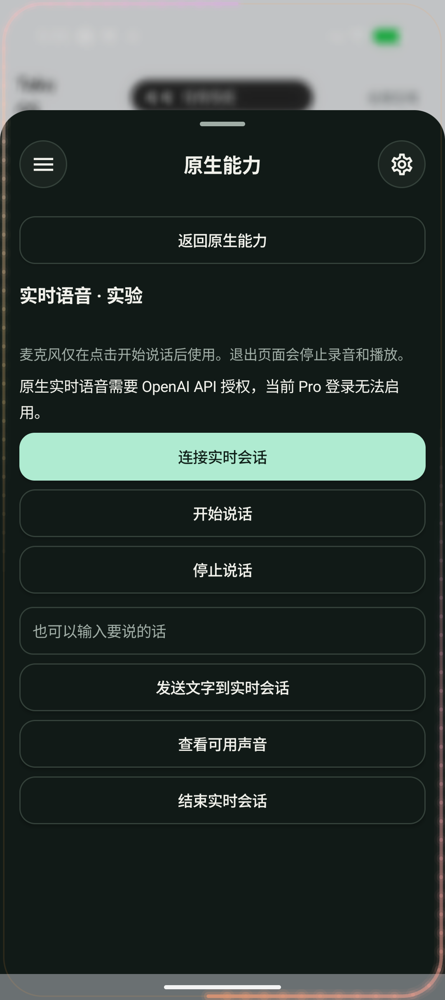

View the latest compact v45 UI · This page retains the v44 native-capability integration acceptance.
TAKU · PIXEL 9 · 2026-10-15
Native Codex capabilities
in the phone Agent drawer
v44 was deployed to the physical phone. Conversations use interactive cards, common capabilities live in settings, and development interfaces live in the workbench.
168Actual native method registrations and UI routes, excluding mocks
0.161.0Based on the actual phone App Server protocol
Real modelEvidence includes replies for conversations, tools, appended instructions, and multiple-choice questions
Arrange the UI by use case
Handle in conversation
Plans and tool status, terminal output, file diffs, context usage, requests for information, and approvals. Append instructions directly while a task runs.
Manage in settings
Models, reasoning levels, quotas, conversation branches, goals, native queue, Apps/MCP, and Harness/Skills.
Debug in development pages
Files and terminal, code review, Hooks, plugins, remote pairing, memory and projects, runtime events, and full protocol forms.
Actual Pixel 9 UI

Capability entriesModels, tasks, and extensions are grouped, retaining the drawer and four-edge animation.

Models and reasoning levelsSupported options come from the actual model catalog and apply to the next turn.

Real interactive questionsThe model issued a native question; after Coffee was selected on the phone, the model actually received the answer and replied.

Real phone toolsA dynamic tool read the actual Pixel 9 and Android 16; tool events appeared in conversation.

Append instructions during executionThe phone used native steer to change reply requirements during the current execution.

Realtime voice service boundariesRecording and protocol are connected; the current Pro sign-in needs additional API authorization to connect to the cloud.
Passed physical-device acceptance
✓ Real dynamic tool returned Android 16 / Pixel 9
✓ Same-turn steer changed the final reply
✓ Native question card selected/submitted; the model received the answer
✓ Goals, queue creation/editing/reordering/deletion, and file reads/writes
✓ 4800 bytes of real PCM input and playback initialization
✓ Network restored after cold boot; home-screen Hi opened the drawer and continued the conversation
Current service boundaries
Realtime cloud voice is not enabledThe current Pro sign-in returned the actual error: realtime conversation requires API key auth. Paid API access is not configured; recording and UI integration do not establish cloud realtime availability.
168 methods represent protocol and entry-point coverage. Experimental services, plugin installation, remote pairing, and vendor attestation have not each passed production acceptance; Windows-only interfaces are disabled on Android. Model and MCP catalogs do not establish authorization or business acceptance for every entry.
This round updated the APK and broker JAR while retaining account and history; the full ROM / OTA was not rebuilt. Unicode input execution has not received a separate functional test.